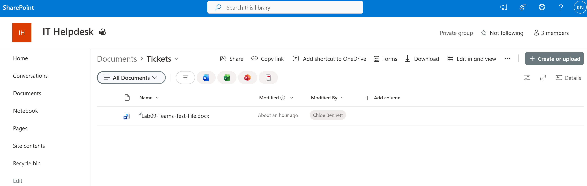
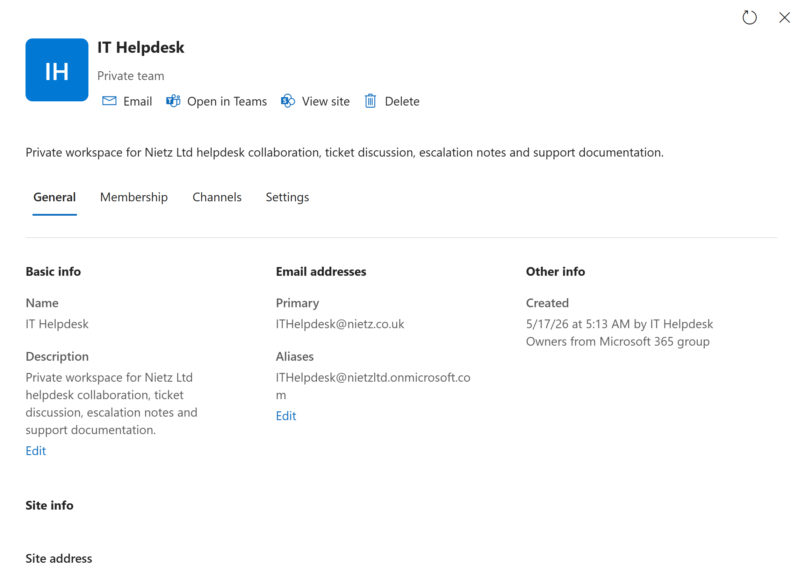
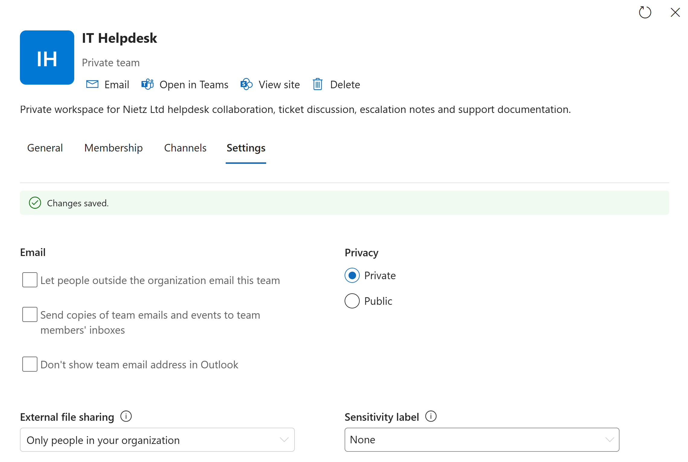
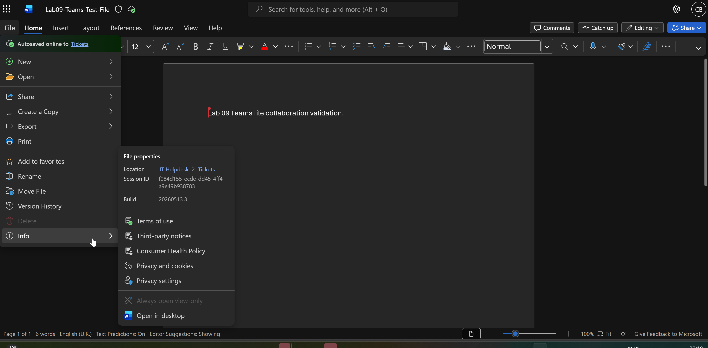
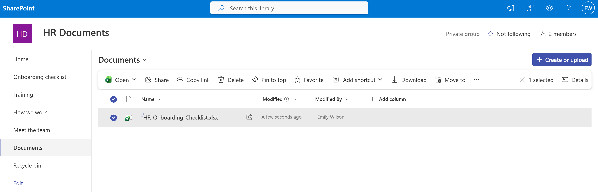
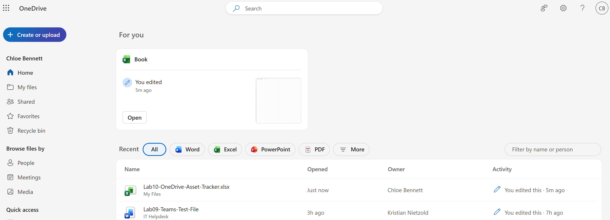
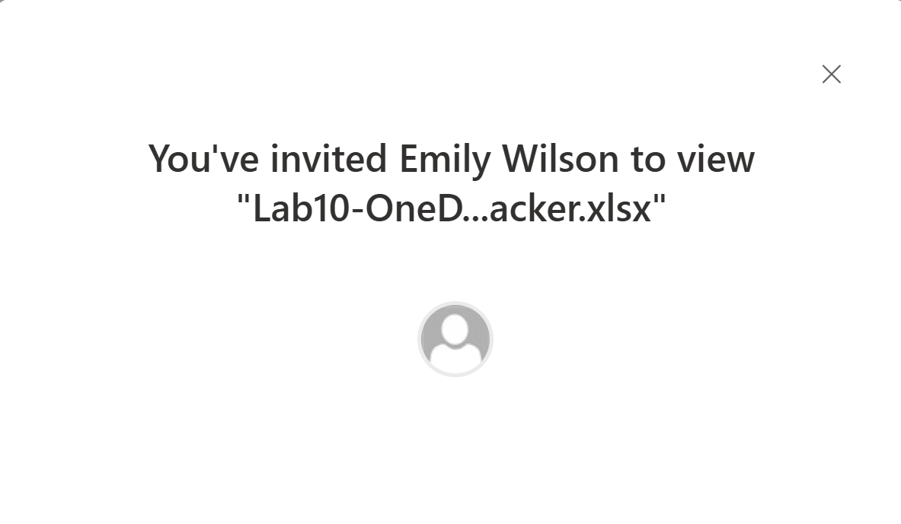
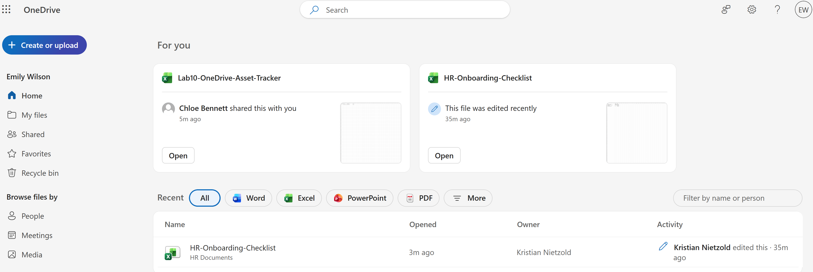
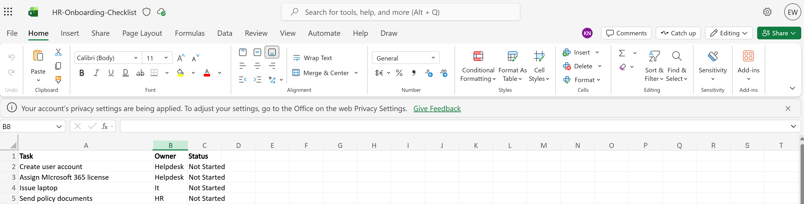

Lab 10: SharePoint and OneDrive File Collaboration
Validated Microsoft 365 file collaboration by reviewing the SharePoint storage behind Teams, tightening site sharing, creating a standalone HR SharePoint site and testing OneDrive sharing between standard users.
Overview
In this lab, I extended the Microsoft 365 collaboration work from Lab 09 into SharePoint and OneDrive. Lab 09 proved Teams channels, posts and Teams file access. This lab focused on the file-storage layer behind that collaboration and separated team-owned SharePoint storage from user-owned OneDrive storage.
The build used two SharePoint patterns: a Teams-connected SharePoint site for the IT Helpdesk Team, and a separate HR Documents SharePoint site created directly for department documentation. I then validated OneDrive file creation and sharing from a standard user account.
Objective
The objective was to confirm that Teams files were stored in SharePoint, review SharePoint site settings from an administrative perspective, apply a more restrictive sharing model for a private helpdesk workspace, and validate OneDrive sharing between normal licensed users.
Environment
| Component | Value |
|---|---|
| Company | Nietz Ltd |
| On-premises AD domain | corp.nietz.co.uk |
| Microsoft 365 domain | nietz.co.uk |
| Daily administrator | k.nietzold@nietz.co.uk |
| Teams-connected SharePoint site | IT Helpdesk |
| Standalone SharePoint site | HR Documents |
| OneDrive source user | c.bennett@nietz.co.uk |
| OneDrive recipient user | e.wilson@nietz.co.uk |
| Previous lab dependency | Lab 09: Microsoft Teams Collaboration |
| Next lab dependency | Lab 11: Entra ID Users, Groups and Roles |
Configuration and Evidence
1. Teams-Backed SharePoint Library Validated
I opened the SharePoint site behind the IT Helpdesk Team and confirmed that the Teams channel file was stored in the connected SharePoint document library.

2. SharePoint-Connected Site Details Reviewed
I reviewed the IT Helpdesk Microsoft 365 group and connected site details, confirming the private team configuration and the corrected primary email address.

3. External Sharing Restricted
I reviewed the IT Helpdesk site settings and restricted external file sharing so the private support workspace was limited to internal users.

4. Member Access to SharePoint-Backed File Confirmed
I signed in as Chloe Bennett and confirmed that a standard Team member could open the SharePoint-backed Teams file from the IT Helpdesk Tickets location.

5. Standalone HR SharePoint Site Created
I created a separate HR Documents SharePoint site using an employee onboarding template and validated the HR document library with an onboarding checklist workbook.

6. OneDrive Test Workbook Created
I created an Excel asset tracker in Chloe Bennett's OneDrive to validate user-owned cloud storage separately from SharePoint team storage.

7. OneDrive File Shared to Recipient
I shared Chloe Bennett's OneDrive asset tracker with Emily Wilson using view access.

8. Recipient Sees Shared OneDrive File
I signed in as Emily Wilson and confirmed that the OneDrive file shared by Chloe appeared in the recipient's Microsoft 365 file experience.

9. HR SharePoint Workbook Opened by Member
I also validated that Emily Wilson could open the HR onboarding workbook from the standalone HR Documents SharePoint site.

Validation
The lab was validated when the IT Helpdesk Teams file was visible in SharePoint, the connected site details were reviewed, external sharing was restricted for the private helpdesk workspace, a standard member could open the SharePoint-backed file, a standalone HR SharePoint site was created, and a OneDrive file was shared from Chloe Bennett to Emily Wilson.
Key Technical Outcomes
This lab demonstrated the practical difference between Teams-backed SharePoint storage, standalone SharePoint department sites and OneDrive personal storage.
It also showed how Microsoft 365 collaboration depends on site membership, document libraries, sharing settings and recipient-side validation.
Summary
- I confirmed that the IT Helpdesk Teams file was stored in a SharePoint-backed document library.
- I reviewed the connected IT Helpdesk site and Microsoft 365 group details.
- I restricted external file sharing for the private helpdesk workspace.
- I validated member access to the SharePoint-backed Teams file.
- I created a standalone HR Documents SharePoint site for onboarding files.
- I created a OneDrive asset tracker as a standard user and shared it with another user.
- I validated recipient-side visibility for the shared OneDrive file.